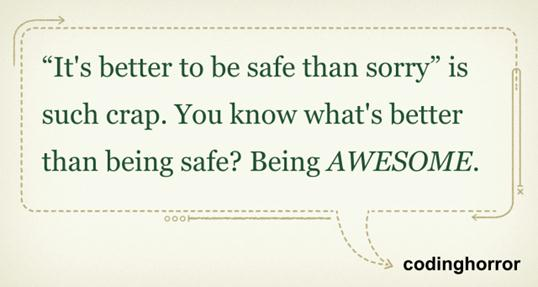

Be Awesome
Fue esta nota en wired enterprise, sobre el robot Curiosity y el patch al software que tuvieron que hacerle, reflexioné sobre algunas lecciones que la NASA nos puede dar.
Resulta que la fecha de lanzamiento de estas misiones está dada por el momento en que Marte y la Tierra están más cerca. Es obvio, al lanzar la nave en ese momento se ahorra combustible, que es el elemento más costoso de toda la misión. Por lo tanto todo debe prepararse para que coincida con esa fecha, de lo contrario el lanzamiento se puede postergar varios años más.
Sucedió en una misión anterior. El lanzamiento debía efectuarse junio, pero el software de control del robot no estaría listo para esa fecha. Sin embargo la fecha de arribo a Marte era enero del año siguiente, así que el equipo de desarrollo tenía 6 meses más para completar todo el software, realizando pruebas con los simuladores disponibles acá en tierra.
¿Lanzarían ustedes al espacio un equipo que cuesta millones de dólares, con una alta exposición mediática, sin tener el software controlador listo, y debidamente probado? Pues en la NASA lo hicieron.
El plazo del lanzamiento de la misión no se corrió porque el software no estaba totalmente listo, para la NASA el plazo es una característica esencial del proyecto, ese feature no se negocia (en realidad lo mandaron con una versión del software, la que se fue actualizando parcialmente durante el vuelo).
Todo esto me recuerda una frase de Jeff Attwood:

En la NASA cuando toman esta decisión tan riesgosa y la resuelven quedan como verdaderos héroes.
Ahora decimos que todo esto que hacen en la NASA es impresionante(awesone), pero la verdad es que para ser asombroso hay que ser arriesgado.
La otra lección viene de esta última misión, en el Curiosity. Este rover llevaba el software necesario sólo para aterrizar y operar los primeros instantes en la superficie de Marte. Posteriormente, cuando el robot se encontraba seguro en la superficie, se procedió a enviar el software para el resto de la misión, lo que requirió borrar el software previo.
¿Por qué? Por que el Curiosity tiene una cantidad limitada de memoria, así que esta restricción de infraestructura obligó a dividir la entrega del software en dos fases, y fíjense que la primera fase fue desechada totalmente después de que cumplió su misión (el aterrizaje).
La operación de ejecutar el paso a producción de este control de cambios en el Curiosity es para matarlo a uno de los nervios. Consideren esto: ejecutan una instrucción de carga del patch, presionan ENTER y ¡deben esperar 28 minutos para obtener una respuesta desde Marte! Las comunicaciones con el Rover Curiosity toman 14 minutos de ida y 14 minutos de vuelta.
La aplicación del patch del Curiosity tomó 4 días en total, principalmente por el delay de las comunicaciones y porque se ejecutó un plan muy meticuloso que asegurara que el robot no quedara inoperativo en el proceso.
Todo eso es muy arriesgado, ¿pero saben qué? El resultado es espectacular, y eso es muy importante.